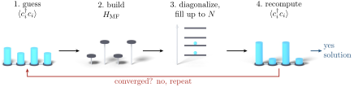
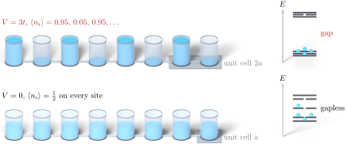
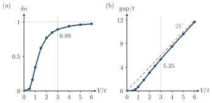
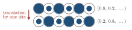

Advanced Quantum Materials 2027 · All lectures · Lecture notes
Session 1. Second Quantization, Mean-Field, and Spontaneous Symmetry Breaking
1.13 Worked example 1, the charge density wave
Can a chain with the same Hamiltonian at every site end with its charge on every second site? We will now see that in mean field the answer is yes, for spinless electrons that repel each other on neighboring sites. The result is a charge density wave, with a charge imbalance and a gap that grow with the repulsion \(V\).
\[H = \sum_{ij} t_{ij}\, c_i^\dagger c_j \;+\; \sum_{ijkl} V_{ijkl}\, c_i^\dagger c_j^\dagger c_k c_l. \tag{1.5}\]
This is the general interacting Hamiltonian of Section 1.12, a hopping \(t_{ij}\) between sites plus a quartic interaction \(V_{ijkl}\). The chain below is its simplest case, with a hopping and a repulsion only between first neighbors.
Let us take the simplest interacting case, which is a spinless one-dimensional chain with nearest-neighbor hopping \(t\) and a nearest-neighbor Coulomb repulsion \(V\).
The spinless chain with a hopping \(t\) and a repulsion \(V\) between neighbors is
\[H = -t\sum_n \left(c_n^\dagger c_{n+1} + \text{h.c.}\right) + V\sum_n c_n^\dagger c_n\, c_{n+1}^\dagger c_{n+1}. \tag{1.6}\]
In the Hartree mean field the repulsion becomes the onsite energy \(V(\langle n_{n-1}\rangle+\langle n_{n+1}\rangle)\) on site \(n\), with \(n_n=c_n^\dagger c_n\). This energy can differ from site to site, so the solution can break the translational symmetry of (1.6). The Fock term, which we leave out, also changes the hopping.
In this form, every site is equivalent because of translational symmetry. The quartic term is the difficult one, so mean-field theory factorizes it. We replace one pair of operators by its expectation value, and we keep the rest as it is. This is an uncontrolled approximation, and a more formal derivation exists with a path integral and a saddle-point approximation, but it is the practical method that we will use in the whole course. As a result, the interaction term becomes a single-particle onsite energy that depends on the position. Nothing forces the expectation value \(\langle c_n^\dagger c_n\rangle\) to be the same at every site, so even if the bare Hamiltonian (1.6) is translationally symmetric, the mean-field solution does not have to be. This difference, a symmetric Hamiltonian with an asymmetric ground state, is the charge density wave, and it is the same difference that Section 1.11 described in the abstract.
The steps From the repulsion of (1.6) to a staggered onsite energy
We write \(n_n=c_n^\dagger c_n\), so the repulsion of (1.6) is \(V\sum_n n_n n_{n+1}\), with each bond once. Each product of two densities is decoupled as in Section 1.12,
\[V n_n n_{n+1} \;\to\; V\big(\langle n_n\rangle n_{n+1} + n_n\langle n_{n+1}\rangle - \langle n_n\rangle\langle n_{n+1}\rangle\big).\]
Site \(n\) is part of two bonds, so it feels the onsite energy
\[\epsilon_n = V\big(\langle n_{n-1}\rangle+\langle n_{n+1}\rangle\big),\]
and the constants add up to \(-V\sum_n\langle n_n\rangle\langle n_{n+1}\rangle\), which removes the energy that is counted twice. We keep only these terms of the densities, which are the Hartree terms, as the text does. The same product also gives a term with \(\langle c_{n+1}^\dagger c_n\rangle\), the Fock term, which changes the hopping, and we leave it out.
The simplest guess that breaks the translational symmetry is a charge that alternates. At half filling, one electron for every two sites, we take
\[\langle n_n\rangle = \tfrac12(1+\delta n)\ \text{on the even sites},\qquad \langle n_n\rangle=\tfrac12(1-\delta n)\ \text{on the odd sites}.\]
An even site has two odd neighbors, so \(\epsilon_\text{even}=V(1-\delta n)\), and an odd site has \(\epsilon_\text{odd}=V(1+\delta n)\). Up to the constant \(V\), this is a staggered potential \(\mp V\delta n\), which is lower on the sites that already have more charge. A chain with these onsite energies and the hopping \(t\) has the bands
\[E_\pm(k) = V\pm\sqrt{(V\delta n)^2+4t^2\cos^2k},\]
with \(k\) in the reduced zone \(|k|\le\pi/2\) of the cell of two sites, and the gap \(2V\delta n\) at the zone edge \(k=\pi/2\). Filling the lower band gives a new imbalance, and self-consistency asks that it is the \(\delta n\) that we put in,
\[\delta n=\frac{V\delta n}{\pi}\int_{-\pi/2}^{\pi/2}\frac{dk}{\sqrt{(V\delta n)^2+4t^2\cos^2 k}}.\]
We divide by \(\delta n\). The integral that is left grows without bound when \(\delta n\) goes to zero, since \(\cos k\) vanishes at the zone edge, so for every \(V>0\) there is a solution with \(\delta n\neq0\). Its value is the curve of Schematic 1.12.
More formally, mean-field theory is a variational search over single-particle product states, where we minimize \(\langle H\rangle\) with respect to the bilinear expectation values \(\langle c_i^\dagger c_j\rangle\) that define the mean-field Hamiltonian. Since the Hamiltonian depends on these expectation values and the expectation values depend on the Hamiltonian, we solve the problem self-consistently. We guess a Hamiltonian, we compute the expectation values that it gives, we build a new Hamiltonian from them, and we repeat until the process converges. Figure 1.4 shows this loop, and every worked example below and every notebook box in this session uses it.

Numerically, at \(V=0\) the spectrum is gapless, which is a metal. When \(V\) grows, a gap opens in the single-particle spectrum and becomes larger. At the same time the charge imbalance between even and odd sites grows from zero toward its maximal value, where it is fully polarized. Figure 1.5 shows the two limits in real space, together with the spectrum of each one.

Schematic 1.12 shows the same two quantities for every \(V\) in the infinite chain. In mean field the imbalance is not zero for any \(V>0\), so there is no threshold, but at small \(V\) it is exponentially small.

g4_cdw_chain.py
compute_cross=False, as the steps above do. At \(V=3t\) the imbalance is \(0.89\) and the gap is \(2V\delta n=5.35\,t\). The imbalance is \(0.03\) at \(V=0.5t\) and goes to \(1\) at large \(V\), where the gap approaches \(2V\), the dashed line. Look at the gap, since it is \(2V\delta n\) at every \(V\). The default call of pyqula also keeps the Fock term, and it gives the smaller imbalance \(0.70\) at \(V=3t\). The Hartree curve is the moment \(m\) of the antiferromagnet of Section 1.14 at \(U=2V\).In a single layer of NbSe2 the \(3\times3\) order of the charge density wave remains, and scanning tunneling spectroscopy at \(5\) K shows a charge density wave gap \(\Delta=4\) meV at the Fermi energy. The article says that this gap is accessible to the spectroscopy because bands that cross the Fermi level are removed in a single layer. The abstract does not say whether \(\Delta\) is the full gap or half of it. Superconductivity also remains in the single layer, with its onset at \(1.9\) K. In bulk NbSe2 the charge density wave sets in at \(33\) K, and the article says that in the bulk the microscopic mechanisms of the charge density wave and of superconductivity remain controversial.
In our reading, the chain of (1.6) is not a model of this material, so we do not compare \(\Delta\) with the gap \(2V\delta n\). In both a gap opens at the Fermi energy, but the \(3\times3\) order repeats every three lattice constants and the order of the chain every two. The layer also becomes a superconductor, so its gap does not make it an insulator, as the gap \(2V\delta n\) does for the chain. The measurement is in this article.
A ring of four sites at half filling has the Hamiltonian
\[H=-t\sum_n\left(c_n^\dagger c_{n+1}+\text{h.c.}\right)+V\sum_n n_n n_{n+1},\qquad V=3t.\]
Here \(n_n=c_n^\dagger c_n\) is the number of electrons on site \(n\). We guess the charges \(0.6\) and \(0.4\) on alternate sites. The mean-field Hamiltonian of this guess gives the charges \(0.82\) and \(0.18\). What do we do next?
Show the answers
- A. ✗ False
This is false. The charge of a pair of sites is \(1\) in both, but the Hamiltonian built from \(0.6\) and \(0.4\) has a ground state with \(0.82\) and \(0.18\). The state is not the ground state of its own Hamiltonian, so it is not a solution.
- B. ✓ True
This is true. The new charges differ from the guess, so the guess was not self-consistent. We build the Hamiltonian again from the new charges and repeat until the input and the output agree.
- C. ✗ False
This is false. Here \(V=3t\) is a parameter of the model. If we tune it until the loop closes, we solve a different Hamiltonian, for another \(V\), and not the one that we want.
The loop stops when the charges that we put in are the charges that we get out.
The charge density wave of the chain has charges that alternate from site to site. How many degenerate ground states does the mean-field solution have?
Show the answers
- A. ✗ False
This is false. A translation by one site maps the charges \((0.8,0.2,0.8,0.2)\) to \((0.2,0.8,0.2,0.8)\). This is a different state with the same energy, so there are at least two.

A translation by one site exchanges the two patterns. The area of the dark disc on each site is the charge \(\langle n_i\rangle\), and the two chains have the same energy. - B. ✓ True
This is true. The charge can sit on the even sites or on the odd sites. These two patterns are exchanged by a translation of one site, so they have the same energy and the translational symmetry is broken.
- C. ✗ False
This is false. A pattern of period two returns to itself after two translations, so the translations give only two different states. We would need a period of four, such as \((0.9,0.5,0.1,0.5)\), for four states.
The number of degenerate states equals the number of different patterns that the broken symmetry generates.
Each picture shows the mean-field charges \(\langle n_i\rangle\) of a half-filled chain with
\[H=-t\sum_n\left(c_n^\dagger c_{n+1}+\text{h.c.}\right)+V\sum_n n_n n_{n+1}.\]
Here \(n_n=c_n^\dagger c_n\) is the number of electrons on site \(n\). The pictures are at \(V=0.5t\), \(V=t\) and \(V=3t\). In mean field the gap is \(2V\delta n\), with \(\delta n\) the charge imbalance. At \(V=3t\) the gap is \(5.35t\). Which picture is at \(V=3t\)?
Show the answers
- A. ✗ False
This is false. This is \(V=0.5t\), with the imbalance \(0.03\) and the gap \(0.03t\). In mean field the imbalance is not zero, but at small \(V\) it is exponentially small.
- B. ✓ True
This is true. The gap \(5.35t\) at \(V=3t\) gives \(\delta n=5.35/6=0.89\), so the charges are \(0.95\) and \(0.05\). One sublattice is almost full.
- C. ✗ False
This is false. This is \(V=t\), with the charges \(0.67\) and \(0.33\). The imbalance is \(0.34\), so the gap is \(2V\delta n=0.68t\) and not \(5.35t\).
Do one pass of the mean-field loop by hand. Take a periodic ring of four sites with two electrons, the Hamiltonian (1.6) and \(V=3t\). Guess the charges \(0.6\) and \(0.4\) on alternate sites. Find the onsite energies of the mean-field Hamiltonian, its two lowest levels and the new charges.
Solution
A site with the charge \(0.6\) has two neighbors with \(0.4\), so its onsite energy is \(V(0.4+0.4)=2.4t\), and a site with \(0.4\) has \(V(0.6+0.6)=3.6t\). The ring has two cells of two sites, so the momenta of the cells are \(K=0\) and \(K=\pi\). In the momentum per site of the bands \(E_\pm(k)\) in the steps above, these are \(k=0\) and the zone edge \(k=\pi/2\). For \(K=0\) the two bonds of a cell add up to the coupling \(2t\), and for \(K=\pi\) they cancel. The levels are then
\[E = 3t\pm\sqrt{(0.6t)^2+(2t)^2} = 0.91t,\ 5.09t \quad (K=0),\qquad E=2.4t,\ 3.6t\quad (K=\pi).\]
The two lowest levels are \(0.91t\) and \(2.4t\). The level at \(2.4t\) sits only on the two sites with the guess \(0.6\), half an electron on each. The level at \(0.91t\) has the weight \(\tfrac12\big(1+0.6/\sqrt{0.36+4}\big)=0.64\) on these two sites together, so \(0.32\) on each. The new charges are \(0.5+0.32=0.82\) and \(0.18\), which is the closed form \(\tfrac34+\Delta/(4\sqrt{4t^2+\Delta^2})\) with \(\Delta=V(0.6-0.4)\).
The new charges are farther apart than the guess, so the imbalance grows in this pass. If we go on, the loop stops at \(0.95\) and \(0.05\) on this ring, which is its charge density wave. This pass is what the computer does at each step of the loop of Figure 1.4, for a chain of any length.
Notebook check-in: session1.ipynb, “Symmetry breaking in the spinless fermionic chain” (Core), and “Gap opening in a spinless interacting model” (Challenge)
Run the self-consistency loop of Section 1.13 yourself. Both cells start the loop from the guess mf="CDW", which picks one of the two charge patterns. The Hamiltonian itself keeps the symmetry, since the cells set the external imbalance cdw = 0. Iterate, and look at how the charge imbalance on each site grows with \(V\), together with the opening of the gap in the spectrum and in the density of states. Both cells also keep the Fock term, so at \(V=3t\) the imbalance is \(0.70\) and not the Hartree value \(0.89\) of the text.
Try it. Run the loop and plot the charge imbalance against \(V\). Check that it grows from zero and saturates close to \(1\) for large \(V\), where one sublattice is almost full. Then set cdw=0.1 and check that the imbalance is finite even at \(V=0\).
- The charge density wave comes back in Section 9.4b, where nesting makes the Lindhard function diverge and a one-dimensional metal dimerizes, which is the Peierls instability.
- The loop of Figure 1.4 is used again for the pairing amplitude in Section 5.4.
- Section 9.5b lists the charge density wave next to magnetism and superconductivity, as instabilities that a response function announces.